a documentary by Quinn Costello, Chris Metzler & Jeff Springer
Now Playing in Select Cities
Find a Screening
About the Film
Hard headed Louisiana fisherman Thomas Gonzales doesn't know what will hit him next. After decades of hurricanes and oil spills he faces a new threat - hordes of monstrous 20 pound swamp rats. Known as "nutria", these invasive South American rodents breed faster than the roving squads of hunters can control them. And with their orange teeth and voracious appetite they are eating up the coastal wetlands that protects Thomas and his town of Delacroix Island from hurricanes. But the people who have lived here for generations are not the type of folks who will give up without a fight. Thomas and a pack of lively bounty hunters are hellbent on saving Louisiana before it dissolves beneath their feet. It is man vs. rodent. May the best mammal win.
- Chicago Tribune
The Filmmakers
Award winning non-fiction filmmakers Quinn Costello, Chris Metzler and Jeff Springer have traveled to many corners of the world in search of unique stories highlighting the important environmental, scientific and cultural issues of contemporary society. With the success of documentary projects as varied as PLAGUES & PLEASURES ON THE SALTON SEA, THE NEW ENVIRONMENTALISTS and EVERYDAY SUNSHINE: THE STORY OF FISHBONE they have gone on to screen their work at SXSW and Tribeca along with national TV broadcasts on PBS and the Sundance Channel. Along the way they have continued to pursue other sub-cultural documentary subjects, including: rogue economists, lucha libre wrestlers, ganja-preneurs and evangelical Christian surfers.
The filmmakers of RODENTS OF UNUSUAL SIZE grew up in different parts of the country, but a passion for the swamp sealed their pact. Cajun Reeboks were donned and the journey began in search of the notorious "nutria rat". Four years after first setting sail for Louisiana they emerged from the bayou covered in mosquito bites and an unwavering love for a place at the "End of the World" that is bursting with joy.
screenings
Now Playing in Select Cities
Portland, OR
Wednesday, September 26th @ 12:30pm and 6:30pm
City Lights Cinema
1930 U.S. 101
Florence, Oregon
* Post-screening Q&A with filmmaker Quinn Costello
New Jersey International Film Festival
Friday, September 28th @ 7:00pm
Rutgers University
Voorhees Hall #105
71 Hamilton Street/College Avenue Campus
New Brunswick, New Jersey